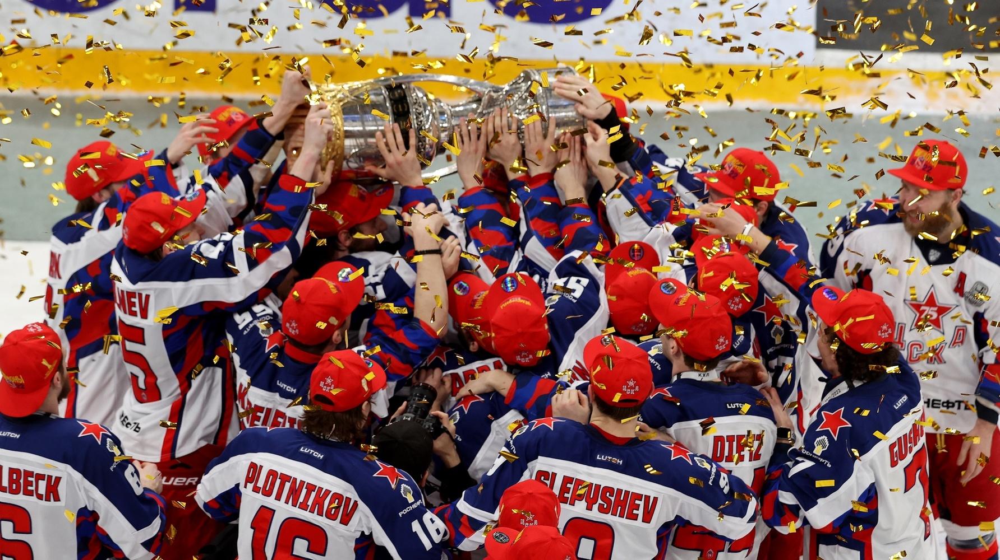
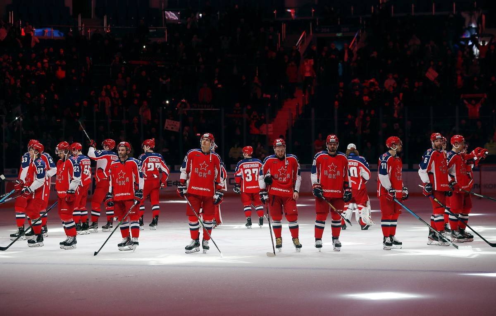

История ХК ЦСКА


1946 - ЦСКА основан под названием ЦДКА (Центральный дом Красной Армии).
1950-е - Армейцы шесть раз становились чемпионами страны, выиграв первенство в 1950, 1955, 1956, 1957, 1958 и 1959 годах.
1960-е - ЦСКА выиграли чемпионат России в 1961, 1963, 1964, 1965, 1966, 1968 годах. В те годы за армейцев выступало множество игроков, в итоге ставших легендами отечественного хоккея, это — Рагулин, Кузькин, Иванов, Зайцев, Локтев, Александров, Волков, Фирсов, Альметов, Ромишевский, Полупанов, Викулов, Мишаков, Моисеев, Ионов.
1970-е - ЦСКА одержал победу в национальном чемпионате в 1970, 1971, 1972, 1973, 1975, 1977, 1978, 1979 годах. В 70-е годы прошло века в ЦСКА образовалась уникальная по своему мастерству и таланту тройка нападения Владимир Петров – Борис Михайлов – Валерий Харламов. В эти годы впервые за ЦСКА сыграл Борис Александров, Виктор Жлуктов, Юрий Блинов, Геннадий Цыганков, Сергей Бабинов, а также легендарный вратарь Владислав Третьяк.
1980-е - Московские армейцы одержали победу во всех чемпионатах десятилетия(10 турниров). В их активе было 32 победы за всю историю чемпионатов СССР по хоккею с шайбой, у ближайшего конкурента (Спартака) было всего 4 победы. За ЦСКА выступали Игорь Ларионов, Вячеслав Фетисов. Армейцы также провели несколько Суперсерий с командами НХЛ.
1990-е - Эти годы стали сложными для ХК ЦСКА, им не удалось выиграть ни одного чемпионата страны за 10 лет. Зато в их составе выступали такие игроки, как Сергей Федоров, Евгений Давыдов, Павел Буре, Вячеслав Буцаев, Вячеслав Козлов, Андрей Коваленко, Олег Белов, Владимир Малахов, Алексей Житник, Илья Бякин, Сергей Зубов, Игорь Кравчук, Николай Хабибулин, Максим Михайловский, Сергей Брылин, Альберт Лещёв.
2000-е - У армейцев Москвы опять не получилось одержать победу не на одном турнире десятилетия. Но появились новые звёзды: Паршин, Широков, Никулин, Мозякин, Пронин, Корнеев, Хомицкий, Жердев, Гончаров, Кулёмин, Филатов.
2010-е - Эти годы можно разделить на 2 периода: до 2014 года дела у команды были плохи, а после него у ЦСКА начался расцвет. После 25 лет неудач команда выиграла регулярный чемпионат, но в полуфинале плей-офф уступила питерскому СКА. У армейцев началось становление новой команды. В 2017 году пришёл новый тренер Игорь Никитин. На Олимпиаде 2018 года в Пхёнчхане олимпийскими чемпионами стали 8 игроков ЦСКА: Илья Сорокин, Алексей Марченко, Богдан Киселевич, Никита Нестеров, Иван Телегин, Сергей Андронов, Михаил Григоренко и Кирилл Капризов, ставший автором золотой шайбы в овертайме финального матча с немцами. А в сезоне 2018-2019 армейцы спустя 30 лет выиграли чемпионат страны, завоевав Кубок Гагарина.
2020-е - В сезоне 2020-2021 ЦСКА выиграл серебряные медали, уступив в финале омскому Авангарду. Затем произошла смена тренера, новым главным тренером стал Сергей Фёдоров. Старт чемпионата стал для армейцев довольно тяжёлым, они заняли всего лишь 3 место в Западной конференции по итогам регулярного чемпионата. В феврале 2022 года 7 хоккеистов ЦСКА были вызваны в сборную России для поездки на Олимпийские игры в Пекине. Это Иван Федотов, Никита Нестеров, Михаил Григоренко, Антон Слепышев, Сергей Андронов, Сергей Плотников, Павел Карнаухов. Там они завоевали серебряные награды. Вернувшись из расположения сборной, хоккеисты начали подготовку к плей-офф КХЛ. Первые 2 раунда армейцы прошли легко, выиграв 8 из 8 матчей, постепенно став главными фаворитами турнира. Затем была одержана победа над главным соперником ЦСКА питерским СКА, а в финале был повержен магнитогорский Металлург. Таким образом ЦСКА выиграл 35 чемпионат страны в своей истории. Одним из главных героев сезона 2021-2022 стал голкипер Иван Федотов, который впоследствии был признан лучшим вратарём сезона КХЛ.